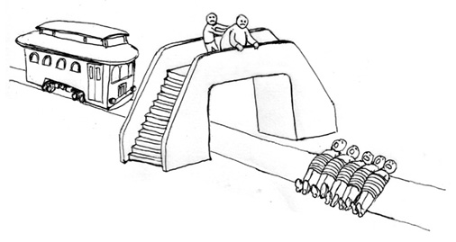

<div style="display:none">
  $${% include talk-notation.tex %}$$
</div>

<p><!--% not ipynb--></p>
<div style="text-align:center">

</div>
<div style="text-align:center">

</div>
<div style="text-align:center">

</div>
<ul>
<li>twitter: <code>@lawrennd</code></li>
<li>blog: <a href="http://inverseprobability.com/blog.html">http://inverseprobability.com</a></li>
</ul>


